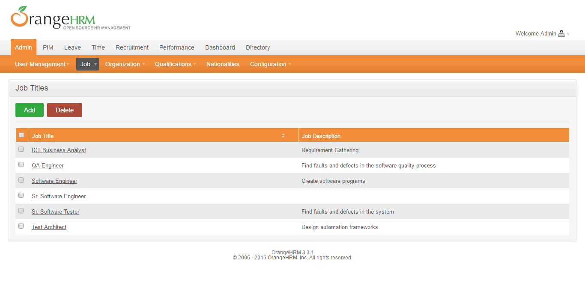
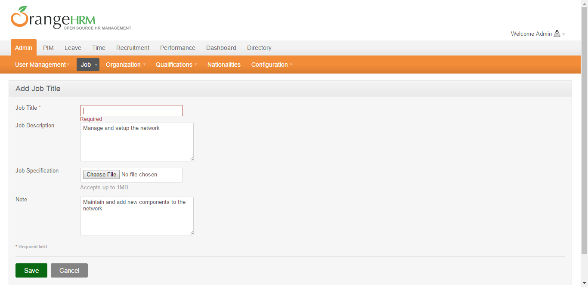
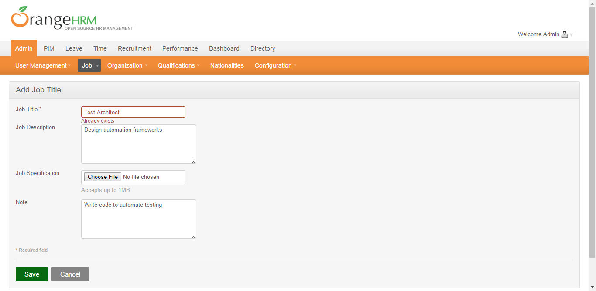

Total Tests
Total Steps
Total Time Taken (Current Run)
0h 7m 25s+425ms
Total Time Taken (Overall)
0h 7m 25s+425ms
Start
07-Sep-2016 07:51:34
End
07-Sep-2016 07:58:59
Pass Percentage
Environment
| Param | Value |
|---|---|
| OS | Windows 8.1 |
| User Name | PC |
| Java Version | 1.8.0_51 |
| Environment | QA |
| Host Name | USER |
| Selenium Version | 2.53.0 |
Categories
| Name |
|---|
Tests
-
Edit Job Title Test pass07-Sep-2016 07:58:18 07-Sep-2016 07:58:59 0h 0m 41s+355ms
Status Timestamp Details 07:58:18 {New Job Title=QA Engineer, BrowserName=Chrome, Runmode=Y, Attachment=, Old Job Title=QA Engineer, Duplicate=N, Job Specification=Delete Current} 07:58:18 Clicking on: landingpage_admin_tab_link_xpath 07:58:21 Clicking on: admin_jobmenu_link_xpath 07:58:21 Clicking on: admin_jobmenu_jobtitles_link_xpath 07:58:23 Searching Job Title: QA Engineer 07:58:23 Job Title Found: QA Engineer 07:58:23 Clicking on Job Title: QA Engineer 07:58:23 Searching Job Title: QA Engineer 07:58:23 Job Title Found: QA Engineer 07:58:25 Job Title Clicked: QA Engineer 07:58:25 Clicking on: editjobtitle_edit_button_xpath 07:58:25 Entering text in: editjobtitle_jobtitle_input_xpath 07:58:25 Entering text in: editjobtitle_jobtitle_input_xpath 07:58:25 Selecting Job Specification: Delete Current 07:58:25 Finding elements: editjobtitle_jobspecification_all_radios_xpath 07:58:25 Elements Found: editjobtitle_jobspecification_all_radios_xpath 07:58:25 Clicking on Job Specification: Delete Current 07:58:25 Getting text from: addjobtitle_jobtitle_errormsg_text_xpath 07:58:25 Checking presence of element: addjobtitle_jobtitle_errormsg_text_xpath 07:58:25 Presence of element: addjobtitle_jobtitle_errormsg_text_xpath 07:58:25 Getting text from: addjobtitle_jobtitle_errormsg_text_xpath 07:58:25 Clicking on: editjobtitle_save_button_xpath 07:58:29 Checking presence of element: jobtitles_jobspecification_attachment_filenotfound_xpath 07:58:59 Element Not Present: jobtitles_jobspecification_attachment_filenotfound_xpath 07:58:59 Searching Job Title: QA Engineer 07:58:59 Job Title Found: QA Engineer 07:58:59 Edit Job Title Test Passed -
Edit Job Title Test fail07-Sep-2016 07:58:08
Status Timestamp Details 07:58:08 {New Job Title=Sr. Software Engineer, BrowserName=Chrome, Runmode=Y, Attachment=E:\Selenium\OrangeHRM\OrangeHRMS_DDF_Framework\extentreports\abc.xml, Old Job Title=Sr. Software Engineer, Duplicate=N, Job Specification=Replace Current} 07:58:08 Clicking on: landingpage_admin_tab_link_xpath 07:58:11 Clicking on: admin_jobmenu_link_xpath 07:58:11 Clicking on: admin_jobmenu_jobtitles_link_xpath 07:58:13 Searching Job Title: Sr. Software Engineer 07:58:13 Job Title Found: Sr. Software Engineer 07:58:13 Clicking on Job Title: Sr. Software Engineer 07:58:13 Searching Job Title: Sr. Software Engineer 07:58:13 Job Title Found: Sr. Software Engineer 07:58:15 Job Title Clicked: Sr. Software Engineer 07:58:15 Clicking on: editjobtitle_edit_button_xpath 07:58:15 Entering text in: editjobtitle_jobtitle_input_xpath 07:58:15 Entering text in: editjobtitle_jobtitle_input_xpath 07:58:15 Selecting Job Specification: Replace Current 07:58:15 Finding elements: editjobtitle_jobspecification_all_radios_xpath 07:58:15 Elements Found: editjobtitle_jobspecification_all_radios_xpath 07:58:15 Clicking on Job Specification: Replace Current 07:58:16 Entering text in: editjobtitle_jobtitle_jobspecification_attachment_xpath 07:58:16 Getting text from: addjobtitle_jobtitle_errormsg_text_xpath 07:58:16 Checking presence of element: addjobtitle_jobtitle_errormsg_text_xpath 07:58:16 Presence of element: addjobtitle_jobtitle_errormsg_text_xpath 07:58:16 Getting text from: addjobtitle_jobtitle_errormsg_text_xpath 07:58:16 Clicking on: editjobtitle_save_button_xpath 07:58:16 Checking presence of element: jobtitles_jobspecification_attachment_filenotfound_xpath 07:58:16 Presence of element: jobtitles_jobspecification_attachment_filenotfound_xpath 07:58:16 File Not Found: E:\Selenium\OrangeHRM\OrangeHRMS_DDF_Framework\extentreports\abc.xml 07:58:16 Taking Screenshot: 
07:58:16 Refreshing the page -
Edit Job Title Test pass07-Sep-2016 07:57:26
Status Timestamp Details 07:57:26 {New Job Title=Software Engineer, BrowserName=Chrome, Runmode=Y, Attachment=, Old Job Title=Software Engineer, Duplicate=N, Job Specification=Keep Current} 07:57:26 Clicking on: landingpage_admin_tab_link_xpath 07:57:29 Clicking on: admin_jobmenu_link_xpath 07:57:29 Clicking on: admin_jobmenu_jobtitles_link_xpath 07:57:32 Searching Job Title: Software Engineer 07:57:32 Job Title Found: Software Engineer 07:57:32 Clicking on Job Title: Software Engineer 07:57:32 Searching Job Title: Software Engineer 07:57:32 Job Title Found: Software Engineer 07:57:34 Job Title Clicked: Software Engineer 07:57:34 Clicking on: editjobtitle_edit_button_xpath 07:57:34 Entering text in: editjobtitle_jobtitle_input_xpath 07:57:34 Entering text in: editjobtitle_jobtitle_input_xpath 07:57:34 Selecting Job Specification: Keep Current 07:57:34 Finding elements: editjobtitle_jobspecification_all_radios_xpath 07:57:34 Elements Found: editjobtitle_jobspecification_all_radios_xpath 07:57:34 Clicking on Job Specification: Keep Current 07:57:34 Getting text from: addjobtitle_jobtitle_errormsg_text_xpath 07:57:34 Checking presence of element: addjobtitle_jobtitle_errormsg_text_xpath 07:57:34 Presence of element: addjobtitle_jobtitle_errormsg_text_xpath 07:57:34 Getting text from: addjobtitle_jobtitle_errormsg_text_xpath 07:57:34 Clicking on: editjobtitle_save_button_xpath 07:57:38 Checking presence of element: jobtitles_jobspecification_attachment_filenotfound_xpath 07:58:08 Element Not Present: jobtitles_jobspecification_attachment_filenotfound_xpath 07:58:08 Searching Job Title: Software Engineer 07:58:08 Job Title Found: Software Engineer 07:58:08 Edit Job Title Test Passed -
Edit Job Title Test pass07-Sep-2016 07:56:44
Status Timestamp Details 07:56:44 {New Job Title=Test Architect, BrowserName=Chrome, Runmode=Y, Attachment=Random, Old Job Title=Test Architect, Duplicate=N, Job Specification=Replace Current} 07:56:44 Clicking on: landingpage_admin_tab_link_xpath 07:56:48 Clicking on: admin_jobmenu_link_xpath 07:56:48 Clicking on: admin_jobmenu_jobtitles_link_xpath 07:56:49 Searching Job Title: Test Architect 07:56:50 Job Title Found: Test Architect 07:56:50 Clicking on Job Title: Test Architect 07:56:50 Searching Job Title: Test Architect 07:56:50 Job Title Found: Test Architect 07:56:52 Job Title Clicked: Test Architect 07:56:52 Clicking on: editjobtitle_edit_button_xpath 07:56:52 Entering text in: editjobtitle_jobtitle_input_xpath 07:56:52 Entering text in: editjobtitle_jobtitle_input_xpath 07:56:52 Selecting Job Specification: Replace Current 07:56:52 Finding elements: editjobtitle_jobspecification_all_radios_xpath 07:56:52 Elements Found: editjobtitle_jobspecification_all_radios_xpath 07:56:52 Clicking on Job Specification: Replace Current 07:56:52 Selecting Random file from: E:\Selenium\OrangeHRM\OrangeHRMS_DDF_Framework//screenshots// 07:56:52 Random file selected: E:\Selenium\OrangeHRM\OrangeHRMS_DDF_Framework\screenshots\Mon_Sep_05_21_51_40_IST_2016.jpg 07:56:52 Entering text in: editjobtitle_jobtitle_jobspecification_attachment_xpath 07:56:52 Getting text from: addjobtitle_jobtitle_errormsg_text_xpath 07:56:52 Checking presence of element: addjobtitle_jobtitle_errormsg_text_xpath 07:56:52 Presence of element: addjobtitle_jobtitle_errormsg_text_xpath 07:56:52 Getting text from: addjobtitle_jobtitle_errormsg_text_xpath 07:56:52 Clicking on: editjobtitle_save_button_xpath 07:56:56 Checking presence of element: jobtitles_jobspecification_attachment_filenotfound_xpath 07:57:26 Element Not Present: jobtitles_jobspecification_attachment_filenotfound_xpath 07:57:26 Searching Job Title: Test Architect 07:57:26 Job Title Found: Test Architect 07:57:26 Edit Job Title Test Passed -
Edit Job Title Test fail07-Sep-2016 07:56:38
Status Timestamp Details 07:56:38 {New Job Title=Network Security Engineer, BrowserName=Chrome, Runmode=Y, Attachment=, Old Job Title=Network Engineer, Duplicate=N, Job Specification=} 07:56:38 Clicking on: landingpage_admin_tab_link_xpath 07:56:42 Clicking on: admin_jobmenu_link_xpath 07:56:42 Clicking on: admin_jobmenu_jobtitles_link_xpath 07:56:44 Searching Job Title: Network Engineer 07:56:44 Job Title Not Found: Network Engineer 07:56:44 Unable to find job title: Network Engineer 07:56:44 Taking Screenshot: 
-
Edit Job Title Test fail07-Sep-2016 07:56:33
Status Timestamp Details 07:56:33 {New Job Title=ICT Business Analyst, BrowserName=Chrome, Runmode=Y, Attachment=Random, Old Job Title=Business Analyst, Duplicate=N, Job Specification=} 07:56:33 Clicking on: landingpage_admin_tab_link_xpath 07:56:36 Clicking on: admin_jobmenu_link_xpath 07:56:36 Clicking on: admin_jobmenu_jobtitles_link_xpath 07:56:38 Searching Job Title: Business Analyst 07:56:38 Job Title Not Found: Business Analyst 07:56:38 Unable to find job title: Business Analyst 07:56:38 Taking Screenshot: 
-
Edit Job Title Test pass07-Sep-2016 07:56:25
Status Timestamp Details 07:56:25 {New Job Title=Test Architect, BrowserName=Chrome, Runmode=Y, Attachment=, Old Job Title=Software Engineer, Duplicate=Y, Job Specification=} 07:56:25 Clicking on: landingpage_admin_tab_link_xpath 07:56:28 Clicking on: admin_jobmenu_link_xpath 07:56:28 Clicking on: admin_jobmenu_jobtitles_link_xpath 07:56:30 Searching Job Title: Software Engineer 07:56:30 Job Title Found: Software Engineer 07:56:30 Clicking on Job Title: Software Engineer 07:56:30 Searching Job Title: Software Engineer 07:56:30 Job Title Found: Software Engineer 07:56:32 Job Title Clicked: Software Engineer 07:56:32 Clicking on: editjobtitle_edit_button_xpath 07:56:32 Entering text in: editjobtitle_jobtitle_input_xpath 07:56:32 Entering text in: editjobtitle_jobtitle_input_xpath 07:56:33 Getting text from: addjobtitle_jobtitle_errormsg_text_xpath 07:56:33 Checking presence of element: addjobtitle_jobtitle_errormsg_text_xpath 07:56:33 Presence of element: addjobtitle_jobtitle_errormsg_text_xpath 07:56:33 Getting text from: addjobtitle_jobtitle_errormsg_text_xpath 07:56:33 Checking presence of element: addjobtitle_jobtitle_errormsg_text_xpath 07:56:33 Presence of element: addjobtitle_jobtitle_errormsg_text_xpath 07:56:33 Already exists, error message displayed for job title: Test Architect 07:56:33 Edit Job Title Test Passed -
Delete Job Title Test pass07-Sep-2016 07:56:19
Status Timestamp Details 07:56:19 {Job Title=Project Manager, BrowserName=Chrome, Runmode=Y, Expected Result=Fail} 07:56:19 Clicking on: landingpage_admin_tab_link_xpath 07:56:23 Clicking on: admin_jobmenu_link_xpath 07:56:23 Clicking on: admin_jobmenu_jobtitles_link_xpath 07:56:25 Searching Job Title: Project Manager 07:56:25 Job Title Not Found: Project Manager 07:56:25 Searching Job Title: Project Manager 07:56:25 Job Title Not Found: Project Manager 07:56:25 Delete Job Title Test Passed -
Delete Job Title Test fail07-Sep-2016 07:56:13
Status Timestamp Details 07:56:13 {Job Title=Network Engineer, BrowserName=Chrome, Runmode=Y, Expected Result=Pass} 07:56:13 Clicking on: landingpage_admin_tab_link_xpath 07:56:17 Clicking on: admin_jobmenu_link_xpath 07:56:17 Clicking on: admin_jobmenu_jobtitles_link_xpath 07:56:19 Searching Job Title: Network Engineer 07:56:19 Job Title Not Found: Network Engineer 07:56:19 Searching Job Title: Network Engineer 07:56:19 Job Title Not Found: Network Engineer 07:56:19 Unable to find job title: Network Engineer 07:56:19 Taking Screenshot:  07:56:19 The following asserts failed: Unable to find job title: Network Engineer expected [true] but found [false] -
Delete Job Title Test pass07-Sep-2016 07:56:04
Status Timestamp Details 07:56:04 {Job Title=Software Tester, BrowserName=Chrome, Runmode=Y, Expected Result=Pass} 07:56:04 Clicking on: landingpage_admin_tab_link_xpath 07:56:07 Clicking on: admin_jobmenu_link_xpath 07:56:07 Clicking on: admin_jobmenu_jobtitles_link_xpath 07:56:09 Searching Job Title: Software Tester 07:56:09 Job Title Found: Software Tester 07:56:09 Selecting the Job Title: Software Tester 07:56:09 Searching Job Title: Software Tester 07:56:09 Job Title Found: Software Tester 07:56:09 Job Title Selected: Software Tester 07:56:09 Clicking on: jobtitles_delete_button_xpath 07:56:09 Clicking on: jobtitles_dialog_delete_button_xpath 07:56:13 Searching Job Title: Software Tester 07:56:13 Job Title Not Found: Software Tester 07:56:13 Delete Job Title Test Passed -
Add Job Title Test pass07-Sep-2016 07:54:52
Status Timestamp Details 07:54:52 {Note=Write and maintain the quality assurance process, Job Title=QA Engineer, BrowserName=Chrome, Runmode=Y, Duplicate=N, Job Description=Find faults and defects in the software quality process, Job Specification=Random} 07:54:52 Clicking on: landingpage_admin_tab_link_xpath 07:54:56 Clicking on: admin_jobmenu_link_xpath 07:54:56 Clicking on: admin_jobmenu_jobtitles_link_xpath 07:54:58 Clicking on: jobtitles_add_button_xpath 07:54:59 Entering text in: jobtitles_jobtitle_input_xpath 07:55:00 Entering text in: jobtitles_jobdescription_textarea_xpath 07:55:00 Selecting Random file from: E:\Selenium\OrangeHRM\OrangeHRMS_DDF_Framework//screenshots// 07:55:00 Random file selected: E:\Selenium\OrangeHRM\OrangeHRMS_DDF_Framework\screenshots\Wed_Sep_07_06_07_51_IST_2016.jpg 07:55:00 Entering text in: jobtitles_jobspecification_attachment_xpath 07:55:00 Entering text in: jobtitles_note_textarea_xpath 07:55:00 Clicking on: jobtitles_save_button_xpath 07:55:04 Checking presence of element: addjobtitle_jobtitle_errormsg_text_xpath 07:55:34 Element Not Present: addjobtitle_jobtitle_errormsg_text_xpath 07:55:34 Checking presence of element: jobtitles_jobspecification_attachment_filenotfound_xpath 07:56:04 Element Not Present: jobtitles_jobspecification_attachment_filenotfound_xpath 07:56:04 Searching Job Title: QA Engineer 07:56:04 Job Title Found: QA Engineer 07:56:04 Job Title Added Successfully: QA Engineer -
Add Job Title Test pass07-Sep-2016 07:53:40
Status Timestamp Details 07:53:40 {Note=Write test cases, Job Title=Sr. Software Tester, BrowserName=Chrome, Runmode=Y, Duplicate=N, Job Description=Find faults and defects in the system, Job Specification=Random} 07:53:40 Clicking on: landingpage_admin_tab_link_xpath 07:53:44 Clicking on: admin_jobmenu_link_xpath 07:53:44 Clicking on: admin_jobmenu_jobtitles_link_xpath 07:53:46 Clicking on: jobtitles_add_button_xpath 07:53:48 Entering text in: jobtitles_jobtitle_input_xpath 07:53:48 Entering text in: jobtitles_jobdescription_textarea_xpath 07:53:48 Selecting Random file from: E:\Selenium\OrangeHRM\OrangeHRMS_DDF_Framework//screenshots// 07:53:48 Random file selected: E:\Selenium\OrangeHRM\OrangeHRMS_DDF_Framework\screenshots\Sat_Sep_03_08_37_58_IST_2016.jpg 07:53:48 Entering text in: jobtitles_jobspecification_attachment_xpath 07:53:48 Entering text in: jobtitles_note_textarea_xpath 07:53:48 Clicking on: jobtitles_save_button_xpath 07:53:52 Checking presence of element: addjobtitle_jobtitle_errormsg_text_xpath 07:54:22 Element Not Present: addjobtitle_jobtitle_errormsg_text_xpath 07:54:22 Checking presence of element: jobtitles_jobspecification_attachment_filenotfound_xpath 07:54:52 Element Not Present: jobtitles_jobspecification_attachment_filenotfound_xpath 07:54:52 Searching Job Title: Sr. Software Tester 07:54:52 Job Title Found: Sr. Software Tester 07:54:52 Job Title Added Successfully: Sr. Software Tester -
Add Job Title Test fail07-Sep-2016 07:52:30
Status Timestamp Details 07:52:30 {Note=Maintain and add new components to the network, Job Title=Network Engineer, BrowserName=Chrome, Runmode=Y, Duplicate=Y, Job Description=Manage and setup the network, Job Specification=E:\Selenium\OrangeHRM\OrangeHRMS_DDF_Framework\abc.xml} 07:52:30 Clicking on: landingpage_admin_tab_link_xpath 07:52:33 Clicking on: admin_jobmenu_link_xpath 07:52:33 Clicking on: admin_jobmenu_jobtitles_link_xpath 07:52:35 Clicking on: jobtitles_add_button_xpath 07:52:37 Entering text in: jobtitles_jobtitle_input_xpath 07:52:37 Entering text in: jobtitles_jobdescription_textarea_xpath 07:52:37 Entering text in: jobtitles_jobspecification_attachment_xpath 07:52:37 Entering text in: jobtitles_note_textarea_xpath 07:52:37 Clicking on: jobtitles_save_button_xpath 07:52:38 Checking presence of element: addjobtitle_jobtitle_errormsg_text_xpath 07:53:08 Element Not Present: addjobtitle_jobtitle_errormsg_text_xpath 07:53:08 Checking presence of element: jobtitles_jobspecification_attachment_filenotfound_xpath 07:53:08 Presence of element: jobtitles_jobspecification_attachment_filenotfound_xpath 07:53:08 Checking presence of element: addjobtitle_jobtitle_errormsg_text_xpath 07:53:38 Element Not Present: addjobtitle_jobtitle_errormsg_text_xpath 07:53:38 File Not Found: E:\Selenium\OrangeHRM\OrangeHRMS_DDF_Framework\abc.xml 07:53:38 Taking Screenshot: 07:53:38 Refreshing the page -
Add Job Title Test fail07-Sep-2016 07:52:22
Status Timestamp Details 07:52:22 {Note=Maintain and add new components to the network, Job Title=, BrowserName=Chrome, Runmode=Y, Duplicate=N, Job Description=Manage and setup the network, Job Specification=} 07:52:22 Clicking on: landingpage_admin_tab_link_xpath 07:52:25 Clicking on: admin_jobmenu_link_xpath 07:52:25 Clicking on: admin_jobmenu_jobtitles_link_xpath 07:52:27 Clicking on: jobtitles_add_button_xpath 07:52:29 Entering text in: jobtitles_jobtitle_input_xpath 07:52:29 Entering text in: jobtitles_jobdescription_textarea_xpath 07:52:29 Entering text in: jobtitles_jobspecification_attachment_xpath 07:52:29 Entering text in: jobtitles_note_textarea_xpath 07:52:29 Clicking on: jobtitles_save_button_xpath 07:52:29 Checking presence of element: addjobtitle_jobtitle_errormsg_text_xpath 07:52:29 Presence of element: addjobtitle_jobtitle_errormsg_text_xpath 07:52:29 Checking presence of element: addjobtitle_jobtitle_errormsg_text_xpath 07:52:29 Presence of element: addjobtitle_jobtitle_errormsg_text_xpath 07:52:29 Getting text from: addjobtitle_jobtitle_errormsg_text_xpath 07:52:29 Job Title Is Mandatory 07:52:30 Taking Screenshot:  -
Add Job Title Test fail07-Sep-2016 07:52:13
Status Timestamp Details 07:52:13 {Note=Write code to automate testing, Job Title=Test Architect, BrowserName=Chrome, Runmode=Y, Duplicate=N, Job Description=Design automation frameworks, Job Specification=} 07:52:13 Clicking on: landingpage_admin_tab_link_xpath 07:52:16 Clicking on: admin_jobmenu_link_xpath 07:52:16 Clicking on: admin_jobmenu_jobtitles_link_xpath 07:52:19 Clicking on: jobtitles_add_button_xpath 07:52:20 Entering text in: jobtitles_jobtitle_input_xpath 07:52:20 Entering text in: jobtitles_jobdescription_textarea_xpath 07:52:21 Entering text in: jobtitles_jobspecification_attachment_xpath 07:52:21 Entering text in: jobtitles_note_textarea_xpath 07:52:21 Clicking on: jobtitles_save_button_xpath 07:52:21 Checking presence of element: addjobtitle_jobtitle_errormsg_text_xpath 07:52:21 Presence of element: addjobtitle_jobtitle_errormsg_text_xpath 07:52:21 Checking presence of element: addjobtitle_jobtitle_errormsg_text_xpath 07:52:21 Presence of element: addjobtitle_jobtitle_errormsg_text_xpath 07:52:21 Getting text from: addjobtitle_jobtitle_errormsg_text_xpath 07:52:21 Already exists, error message displayed for job title: Test Architect 07:52:22 Taking Screenshot:  07:52:22 The following asserts failed: Already exists, error message displayed for job title: Test Architect expected [true] but found [false] -
Add Job Title Test fail07-Sep-2016 07:52:03
Status Timestamp Details 07:52:03 {Note=Write test cases, Job Title=Software Tester, BrowserName=Chrome, Runmode=Y, Duplicate=N, Job Description=Find faults and defects in the system, Job Specification=Random} 07:52:03 Clicking on: landingpage_admin_tab_link_xpath 07:52:07 Clicking on: admin_jobmenu_link_xpath 07:52:07 Clicking on: admin_jobmenu_jobtitles_link_xpath 07:52:09 Clicking on: jobtitles_add_button_xpath 07:52:11 Entering text in: jobtitles_jobtitle_input_xpath 07:52:11 Entering text in: jobtitles_jobdescription_textarea_xpath 07:52:11 Selecting Random file from: E:\Selenium\OrangeHRM\OrangeHRMS_DDF_Framework//screenshots// 07:52:11 Random file selected: E:\Selenium\OrangeHRM\OrangeHRMS_DDF_Framework\screenshots\Sun_Sep_04_08_20_55_IST_2016.jpg 07:52:11 Entering text in: jobtitles_jobspecification_attachment_xpath 07:52:11 Entering text in: jobtitles_note_textarea_xpath 07:52:11 Clicking on: jobtitles_save_button_xpath 07:52:11 Checking presence of element: addjobtitle_jobtitle_errormsg_text_xpath 07:52:11 Presence of element: addjobtitle_jobtitle_errormsg_text_xpath 07:52:11 Checking presence of element: addjobtitle_jobtitle_errormsg_text_xpath 07:52:11 Presence of element: addjobtitle_jobtitle_errormsg_text_xpath 07:52:11 Getting text from: addjobtitle_jobtitle_errormsg_text_xpath 07:52:11 Already exists, error message displayed for job title: Software Tester 07:52:13 Taking Screenshot: 07:52:13 The following asserts failed: Already exists, error message displayed for job title: Software Tester expected [true] but found [false] -
Add Job Title Test pass07-Sep-2016 07:51:35
Status Timestamp Details 07:51:35 {Note=Write code to solve a business problem, Job Title=Software Engineer, BrowserName=Chrome, Runmode=Y, Duplicate=Y, Job Description=Design software systems, Job Specification=Random} 07:51:35 Opening Browser: Chrome 07:51:39 Browser Opened Successfully 07:51:40 Navigating to URL: http://127.0.0.1/orangehrm-3.3.1/symfony/web/index.php/auth/login 07:51:44 Entering text in: loginpage_username_input_xpath 07:51:45 Entering text in: loginpage_password_input_xpath 07:51:45 Clicking on: loginpage_login_button_xpath 07:51:52 Checking presence of element: landingpage_welcomemsg_link_xpath 07:51:52 Presence of element: landingpage_welcomemsg_link_xpath 07:51:52 Login Successful 07:51:52 Clicking on: landingpage_admin_tab_link_xpath 07:51:58 Clicking on: admin_jobmenu_link_xpath 07:51:59 Clicking on: admin_jobmenu_jobtitles_link_xpath 07:52:01 Clicking on: jobtitles_add_button_xpath 07:52:03 Entering text in: jobtitles_jobtitle_input_xpath 07:52:03 Entering text in: jobtitles_jobdescription_textarea_xpath 07:52:03 Selecting Random file from: E:\Selenium\OrangeHRM\OrangeHRMS_DDF_Framework//screenshots// 07:52:03 Random file selected: E:\Selenium\OrangeHRM\OrangeHRMS_DDF_Framework\screenshots\Sun_Sep_04_08_59_09_IST_2016.jpg 07:52:03 Entering text in: jobtitles_jobspecification_attachment_xpath 07:52:03 Entering text in: jobtitles_note_textarea_xpath 07:52:03 Clicking on: jobtitles_save_button_xpath 07:52:03 Checking presence of element: addjobtitle_jobtitle_errormsg_text_xpath 07:52:03 Presence of element: addjobtitle_jobtitle_errormsg_text_xpath 07:52:03 Checking presence of element: addjobtitle_jobtitle_errormsg_text_xpath 07:52:03 Presence of element: addjobtitle_jobtitle_errormsg_text_xpath 07:52:03 Getting text from: addjobtitle_jobtitle_errormsg_text_xpath 07:52:03 Already exists, error message displayed for job title: Software Engineer -
Login Test skip07-Sep-2016 07:51:34 07-Sep-2016 07:51:34 0h 0m 0s+2ms
Status Timestamp Details 07:51:34 {Username=jack, BrowserName=Chrome, Password=smith, Runmode=Y, Expected Result=Pass} 07:51:34 Skipping as Test Case Runmode is No -
Login Test skip07-Sep-2016 07:51:34
Status Timestamp Details 07:51:34 {Username=admin, BrowserName=Chrome, Password=xyzsa, Runmode=Y, Expected Result=Fail} 07:51:34 Skipping as Test Case Runmode is No -
Login Test skip07-Sep-2016 07:51:34
Status Timestamp Details 07:51:34 {Username=admin, BrowserName=Chrome, Password=admin, Runmode=Y, Expected Result=Pass} 07:51:34 Skipping as Test Case Runmode is No